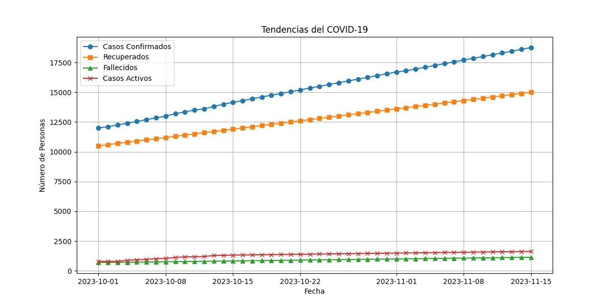

Tendencias del COVID-19

Conclusión
Tendencia general de los casos confirmados, recuperados y fallecidos: Los gráficos muestran una tendencia ascendente de los casos confirmados, recuperados y fallecidos, aunque la tasa de mortalidad parece estabilizarse con el tiempo.
Tasa de Mortalidad: La tasa de mortalidad ha sido relativamente constante a lo largo del tiempo, con una ligera disminución hacia los últimos días de las observaciones.
Casos por Millón: Los casos por millón aumentan progresivamente, lo que puede ser un indicador de mayor propagación del virus.
Casos Activos: La cantidad de casos activos también ha tenido un aumento constante, lo que puede indicar una carga creciente para los sistemas de salud.
Relación entre Casos Confirmados y Fallecidos: El análisis de dispersión muestra la relación lineal entre los casos confirmados y los fallecidos.
Proporción de Recuperados vs Fallecidos: Aunque los recuperados superan significativamente a los fallecidos, es importante mantener medidas de control para evitar el aumento de los casos.